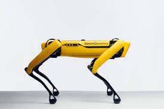
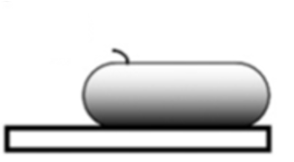
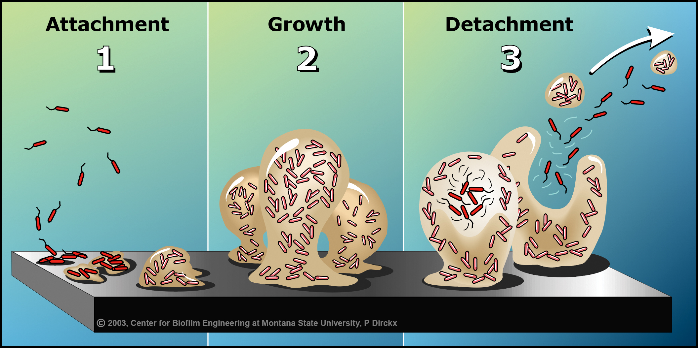
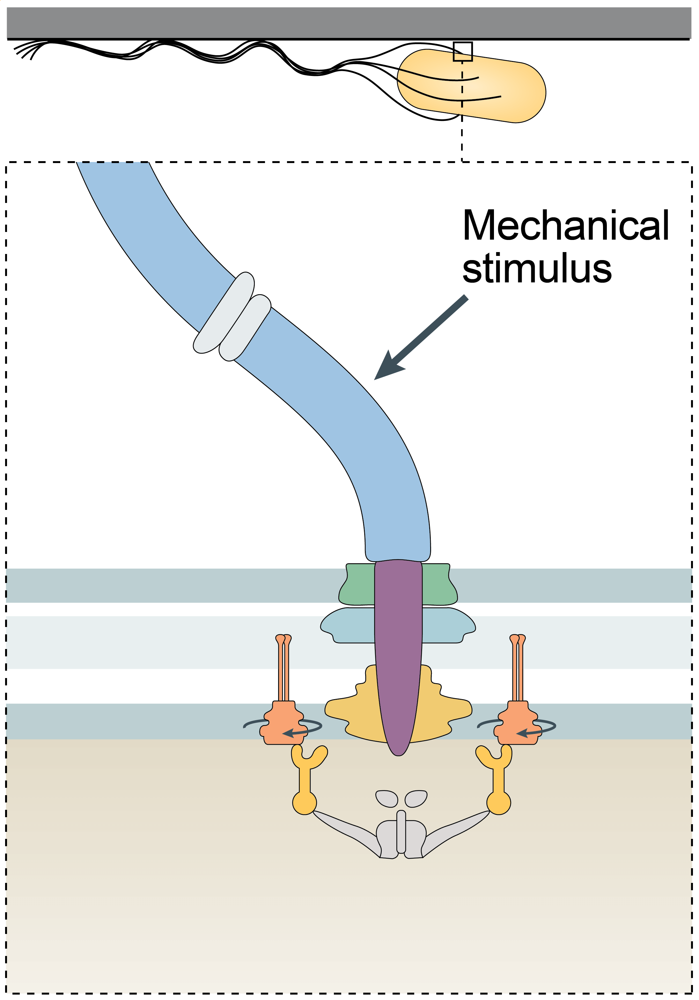
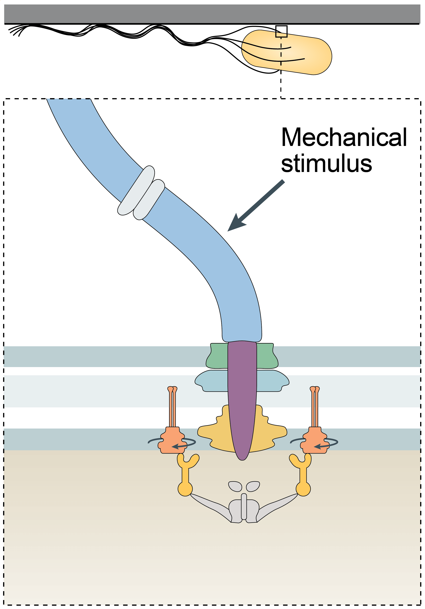
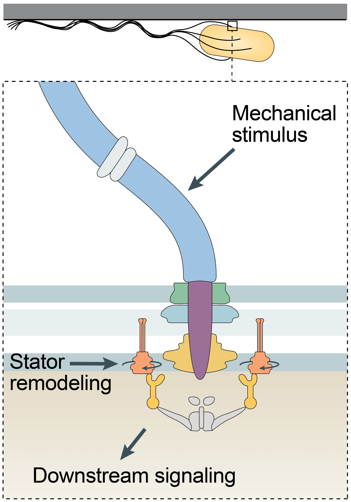
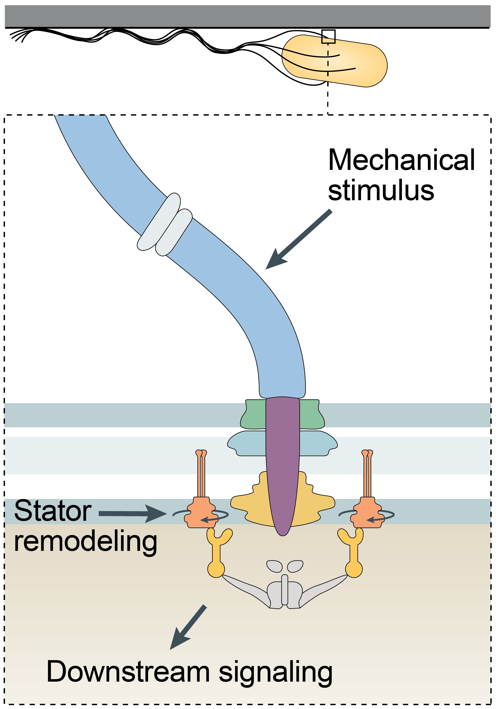
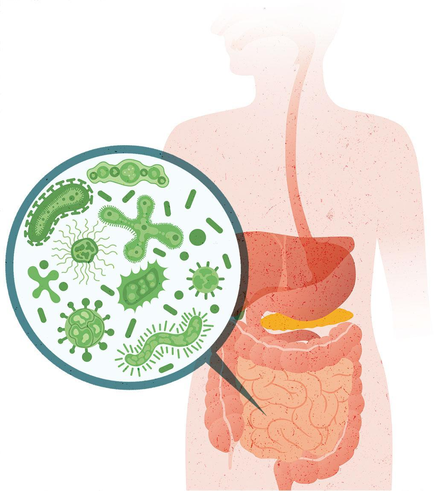
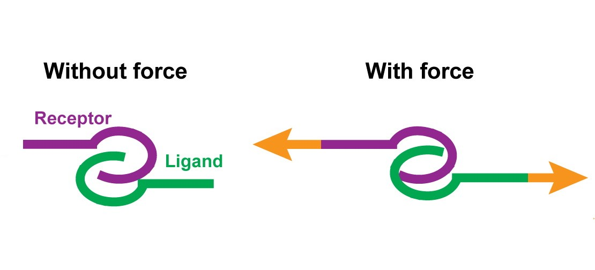
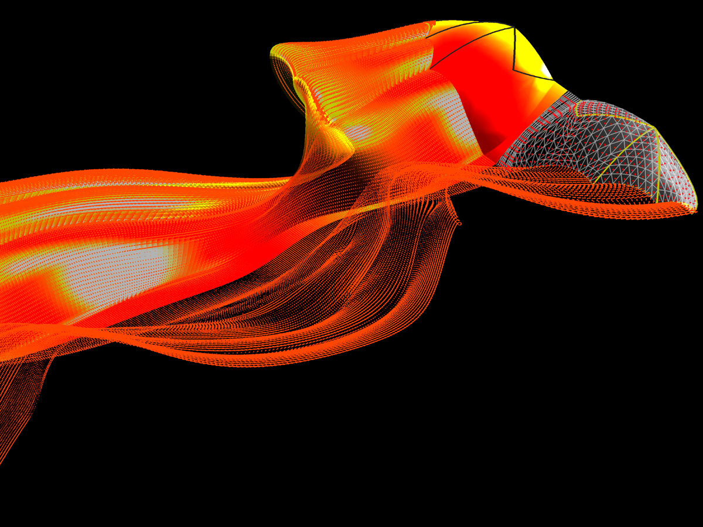

Artwork: Dan Nowakowski/Nicholas Taylor
Finding bioinspiration in Nature's smallest motors and sensors
Navish Wadhwa
Harvard University
Many great technologies mimic nature

Bio-inpired robots

Neural networks
Velcro
Hydrophobic surfaces
Bacteria are an abundant source of nanotech inspiration
Bacteria are the smallest self-propelled swimmers

A nanoscale motor powers
swimming in bacteria


How does the flagellar motor cope with changes in mechanical load?
Automatic gearshift in cars allows the engine to adapt to changing terrains


Automatic gearshift in E. coli allows the motor to adapt to changing loads



Electrorotation allows
full control over motor load


Instantaneous
Reversible
Controllable
Electrorotation allows
full control over motor load

A change in load triggers stepwise changes in motor speed


The motor adapts to changes
in load by remodeling its stator

A machine that is both a motor and a sensor

How do single cells "know" they are on a surface?
 

 

How does the flagellar motor sense surfaces?
Bacteria live in a fluid environment

Roman Stocker lab
How do bacteria sense flows?
Bacteria routinely face osmotic insults

Centre for Science and Environment
How do bacteria cope with osmotic stress?
Bacterial Mechanobiology lab


Teaching interests
- Statiscs
- Dynamics
- Dynamics of Fluids
- Mechanobiology from molecules to organisms

Mechanincs of bonds

Mechanics of biological fluids

Mechanics of tissues and morphogenesis

Mechanics of swimming and flying
Acknowledgements

Howard C. Berg (1934 - 2021)

Rob Phillips (Caltech)

Ethan Garner (Harvard)

Yuhai Tu
(IBM)
Alberto Sassi (IBM)
Sophia Belser (Cambridge)

Jinming Yang (Yale)

Daozheng Gong (Chicago)
Siyu He (Columbia)